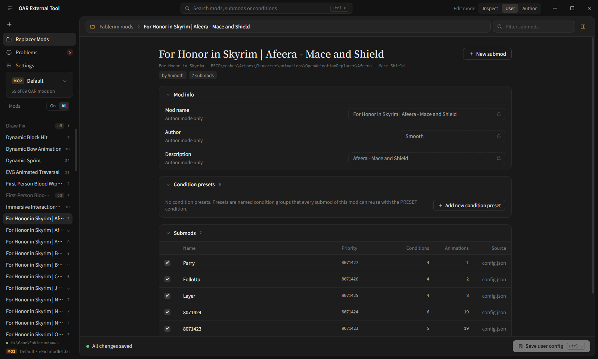
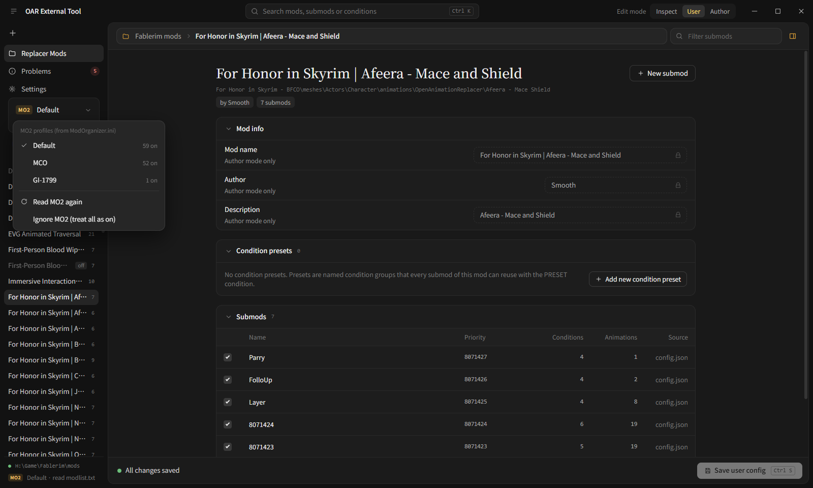
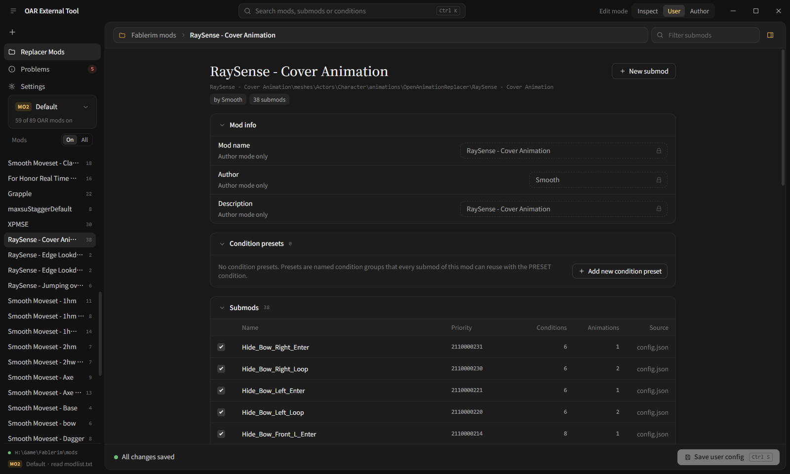
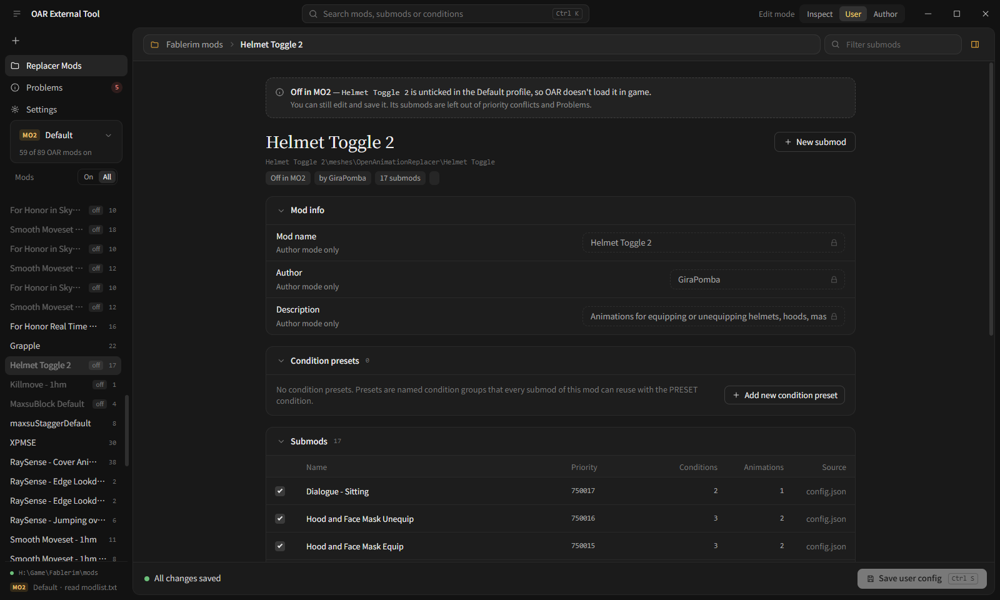
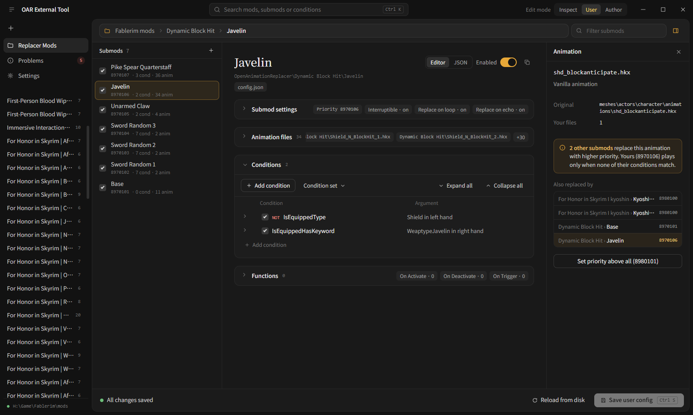
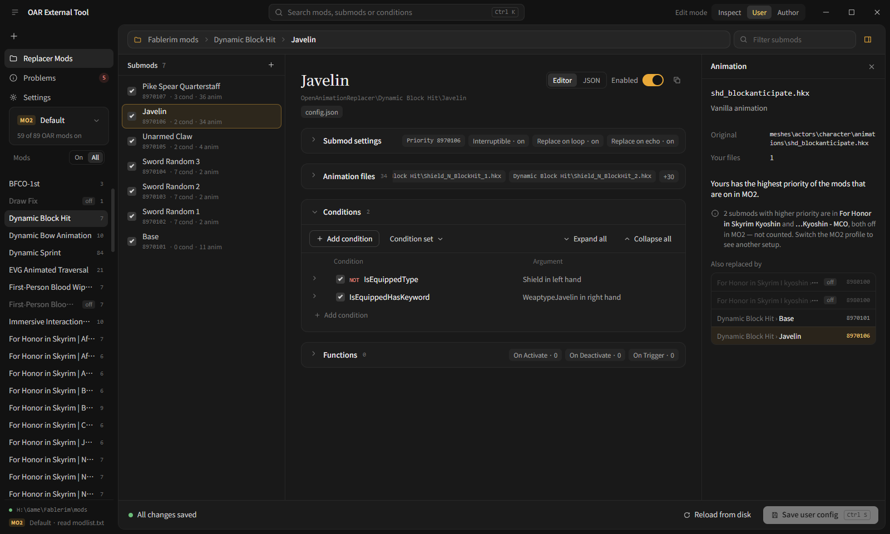

OAR External Tool — MO2 프로필 연동 목업
실제 앱 화면(Fablerim mods, Default 프로필)에 새 요소만 얹어 캡처했습니다. 도구는 modlist.txt를 읽기만 하고 고치지 않습니다.






실제 앱 화면(Fablerim mods, Default 프로필)에 새 요소만 얹어 캡처했습니다. 도구는 modlist.txt를 읽기만 하고 고치지 않습니다.





